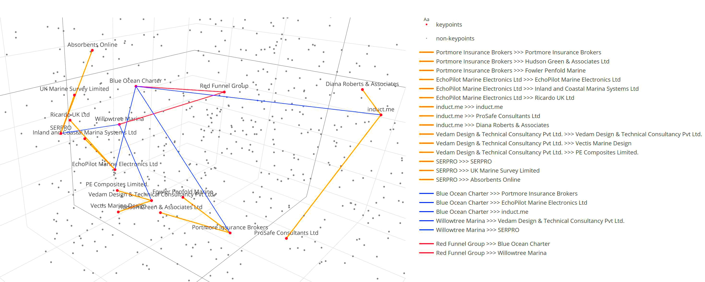
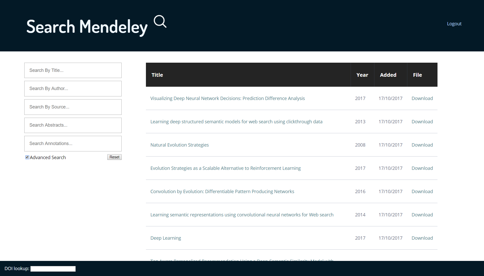
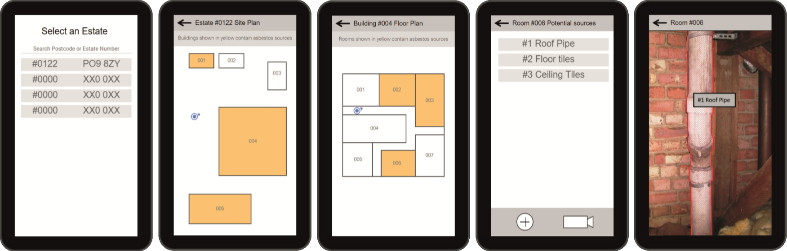

Currently studying PHD Computer Science at University of Southampton.
Recently graduated from University of Portsmouth with MEng Computer Science with Distinction.
As professional and enthusiast programmer, I work on projects both for utility and fun.
A number of my academic and side-project can be found here.
I have a keen interest in Cognitive Computing, Machine Learning, Data Science, Natural Language Processing, and Semantics.
I believe strongly in the importance of Free and Open Source software;
the full source code to most of my projects can be found on GitHub.
Most of my projects are under the MIT License or similar open licenses.
My hackathon team Lys Fibé can often be found at hackathons around the south coast, and sometimes even abroad. Most of our projects are a bit of fun with added data science, and have won multiple awards including:
As VP Tech for the University of Portsmouth IT Society
I created a number of projects for demonstrative and educational purposes,
to aid in my teaching of student workshops, all of these can be found here.
Contact Details & Links
Want to find out more, give feedback, or discuss an opportunity?
Recommendations from Cold Starts in Big Data (Extended Edition)

Abstract
This paper examines the challenging problem of new user cold starts in subset labelled and extremely
sparsely labelled big data. We introduce a new Isle of Wight Supply Chain (IWSC) dataset demonstrating
these characteristics. We also introduce a new technique addressing these challenges, the Transitive
Semantic Relationships (TSR) model, which infers potential relationships from user and item text content
and few labelled examples.
We perform both implicit and explicit evaluation of TSR as a recommender system and from new user cold
starts we achieve a hit-rate@10 of 77% on a collection of 630 items with only 376 supply-chain consumer
labels, and 67% with only 142 supply-chain supplier labels, demonstrating a high level of performance
even with extremely few labels in challenging cold-start scenarios.
TSR is suitable for any dataset featuring few labels and user and item content, where similarity of content
indicates similar relationship forming capability. TSR can be used as a standalone recommender system
or to complement existing high-performance recommender models that require more labels or do not support
cold starts.
Ralph, D., Li, Y., Wills, G. et al.
Recommendations from cold starts in big data. Computing (2020).
https://doi.org/10.1007/s00607-020-00792-y
BibTeX
@Article{Ralph2020,
author={Ralph, David
and Li, Yunjia
and Wills, Gary
and Green, Nicolas G.},
title={Recommendations from cold starts in big data},
journal={Computing},
year={2020},
issn={1436-5057},
doi={10.1007/s00607-020-00792-y},
url={https://doi.org/10.1007/s00607-020-00792-y}
}
RIS
TY - JOUR
AU - Ralph, David
AU - Li, Yunjia
AU - Wills, Gary
AU - Green, Nicolas G.
PY - 2020
DA - 2020/01/29
TI - Recommendations from cold starts in big data
JO - Computing
SN - 1436-5057
UR - https://doi.org/10.1007/s00607-020-00792-y
DO - 10.1007/s00607-020-00792-y
ID - Ralph2020
ER -
Recommendations from Cold Starts in Big Data
Abstract
In this paper, we introduce Transitive Semantic Relationships (TSR), a new technique for ranking
recommendations from cold-starts in datasets with very sparse, partial labelling, by making use
of semantic embeddings of auxiliary information, in this case, textual item descriptions. We also
introduce a new dataset on the Isle of Wight Supply Chain (IWSC), which we use to demonstrate the
new technique.
We achieve a cold start hit rate @10 of 77% on a collection of 630 items with only
376 supply-chain supplier labels, and 67% with only 142 supply-chain consumer labels, demonstrating
a high level of performance even with extremely few labels in challenging cold-start scenarios.
The TSR technique is generalisable to any dataset where items with similar description text share
similar relationships and has applications in speculatively expanding the number of relationships
in partially labelled datasets and highlighting potential items of interest for human review. The
technique is also appropriate for use as a recommendation algorithm, either standalone or
supporting traditional recommender systems in difficult cold-start situations.
Publication Details
In Proceedings of the 4th International Conference on Internet of Things, Big Data and Security (IoTBDS 2019), pages 185-194
Ralph, D.; Li, Y.; Wills, G. and Green, N. (2019).
Recommendations from Cold Starts in Big Data.
In Proceedings of the 4th International Conference on Internet of Things, Big Data and Security - Volume 1: IoTBDS,
ISBN 978-989-758-369-8, pages 185-194. DOI: 10.5220/0007798801850194
Bibtex
@conference{iotbds19,
author={David Ralph. and Yunjia Li. and Gary Wills. and Nicolas G. Green.},
title={Recommendations from Cold Starts in Big Data},
booktitle={Proceedings of the 4th International Conference on Internet of Things, Big Data and Security - Volume 1: IoTBDS,},
year={2019},
pages={185-194},
publisher={SciTePress},
organization={INSTICC},
doi={10.5220/0007798801850194},
isbn={978-989-758-369-8},
}
EndNote
TY - CONF
JO - Proceedings of the 4th International Conference on Internet of Things, Big Data and Security - Volume 1: IoTBDS,
TI - Recommendations from Cold Starts in Big Data
SN - 978-989-758-369-8
AU - Ralph, D.
AU - Li, Y.
AU - Wills, G.
AU - Green, N.
PY - 2019
SP - 185
EP - 194
DO - 10.5220/0007798801850194
Search Mendeley

Search Mendeley provides advanced tools for browsing and searching your Mendeley library, including annotation search.
This was created during the first year of my PhD studies to help organise my library.
Search Mendeley is available as a website using Python Flask, or a bundled Chrome app.
Visual design and CSS was contributed by Ryan Thickett.
ARMAS (Augmented Reality Mobile Asbestos Surveyor)

ARMAS is an Augmented Reality Mobile Asbestos Survey tool
created in collaboration with Hampshire Scientific Services.
This was the dissertation project for my undergraduate degree at the University of Portsmouth.
The app is built for Android mobile devices, and is optimised for use on both phones and tablets.
It utilises Wikitude to provide an augmented reality interface for highlighting known asbestos locations.
The app was demonstrated at the university's student conference March 2016,
and has since been taken forward by a new group of students.
A custom implementation of a genetic algorithm simulator in Java.
The program allows for custom fitness functions and generates a detailed output log of the simulation,
making it an ideal learning tool.
The GUI allows for input of a custom fitness function (currently 1 dimensional only),
as well as selection of population size (population is always constant between generations),
elitism, mutation chance, and optional sigma scaling.
A number of stopping conditions are supported, including 'known best' and max-generations.
The program utilises a thread pool with an optional number of workers.
This Java application uses APARAPI to perform molecular dynamics simulation with hardware acceleration.
The GPU is utilised to calculate Lennard-Jones potential for particles with one GPU thread per particle.
Originally an attempt to recreate Angry Birds in Python.
The game models projectile motion using SUVAT and features procedurally generated levels.
While originally created as a side-project in 2013,
it was later re-purposed for use as a teaching resource and example program for the
IT Society Python Games Development workshop.
Floop is an information managment website, to help people organise their food storage,
which movies they want to watch, and contact details.
The site is intended to streamline many of the common functions required in shared accommodation.
Floop is a frameworkless RESTful PHP and HTML5/JavaScript webapp, with an extensive REST API.
The site has been extensively used in practice (the first launch being in 2014).
A demo version is linked below.
Logo and advice on visual design contributed by Ryan Thickett.
This project is a RESTful PHP and HTML5/JavaScript online shop,
with separate CMS (content management), Customer, and Admin pages, as well as an extensive REST API.
The site contains no functional purchase / transaction controls and is intended as a demo only.
This Java EE web application can be used to calculate the degree classification
that would be awarded to an MEng student at the University of Portsmouth based on a set of unit grades.
I created this as while grade calculators exist for most other courses, there was not yet one for MEng courses.
An attempt to make a simple Rogue-like game using VB Windows forms.
The game features procedural building and creature placement, an item system,
and a detailed tile description system.
Note: This is a very old project form my first year of college and as such is quite poorly implemented.
The project is not a serious attempt at making a functional game, more a proof of concept.
A paper on high-precision location estimation I wrote during my undergraduate studies.
Abstract
A number of different methods and technologies exist for determining the location of mobile devices.
Depending on the desired usage, a different subset of these may be suitable for a given project.
One of the key issues in location detection is the degree of precision to which these tools remain accurate
and additionally the reliability of that data. For some usages, such as markerless augmented reality,
requiring accuracy to within a few meters, typical solutions such as GPS may not be sufficient
and alternatives must be considered.
This paper will evaluate and compare technologies and tools for mobile devices,
such as smartphones and tablets, to accurately determine their location to within 5 meters or less with consideration
for different environments and conditions in which they may need to operate given different use cases.
Techniques for ensuring operability in challenging environments will be discussed.